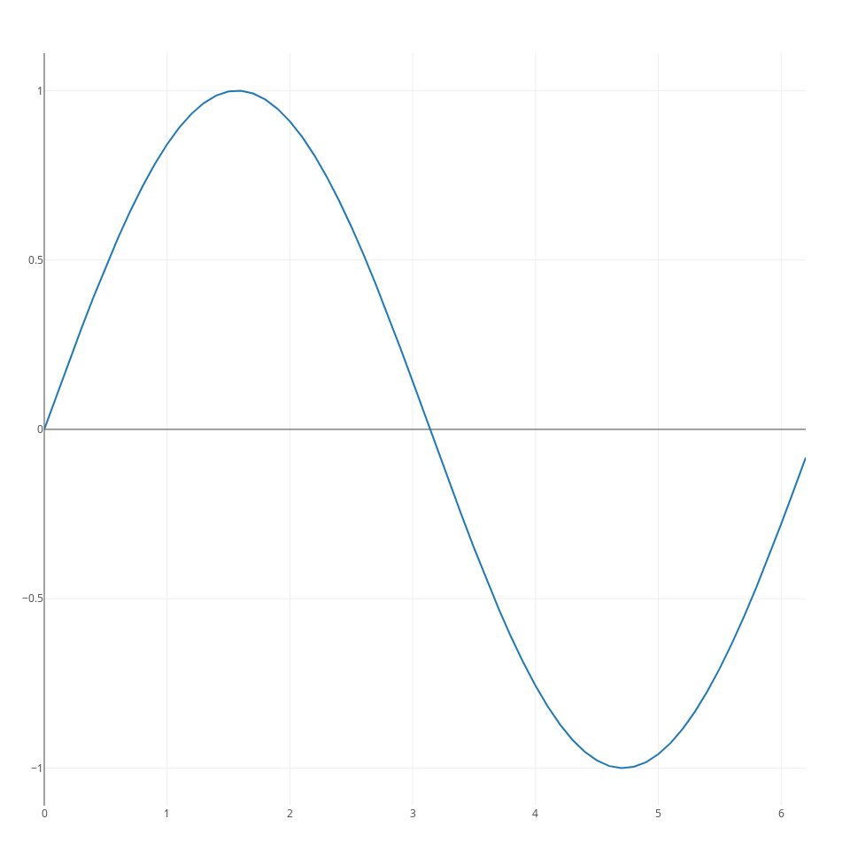
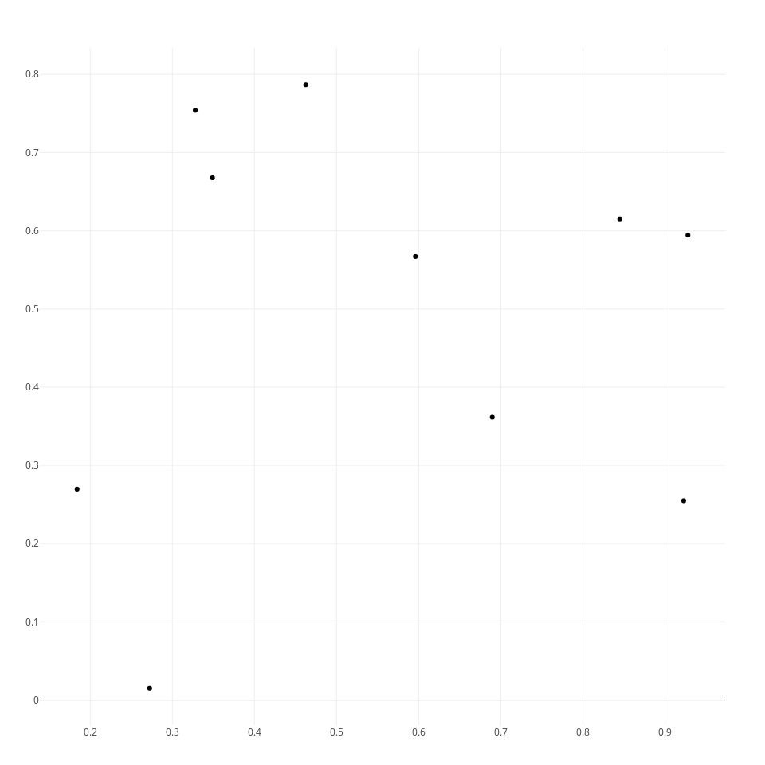
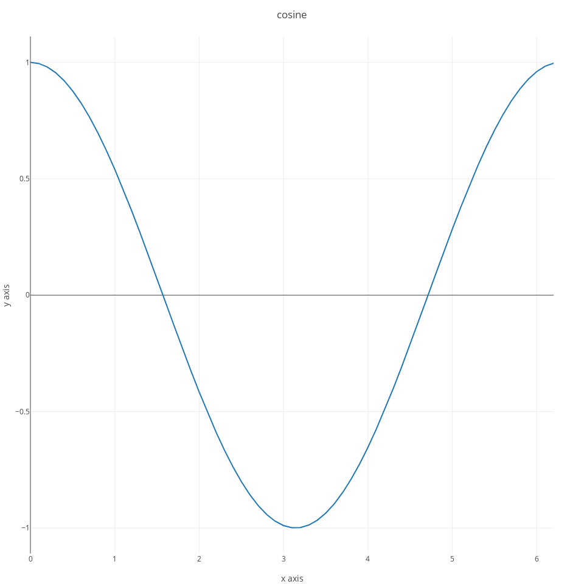
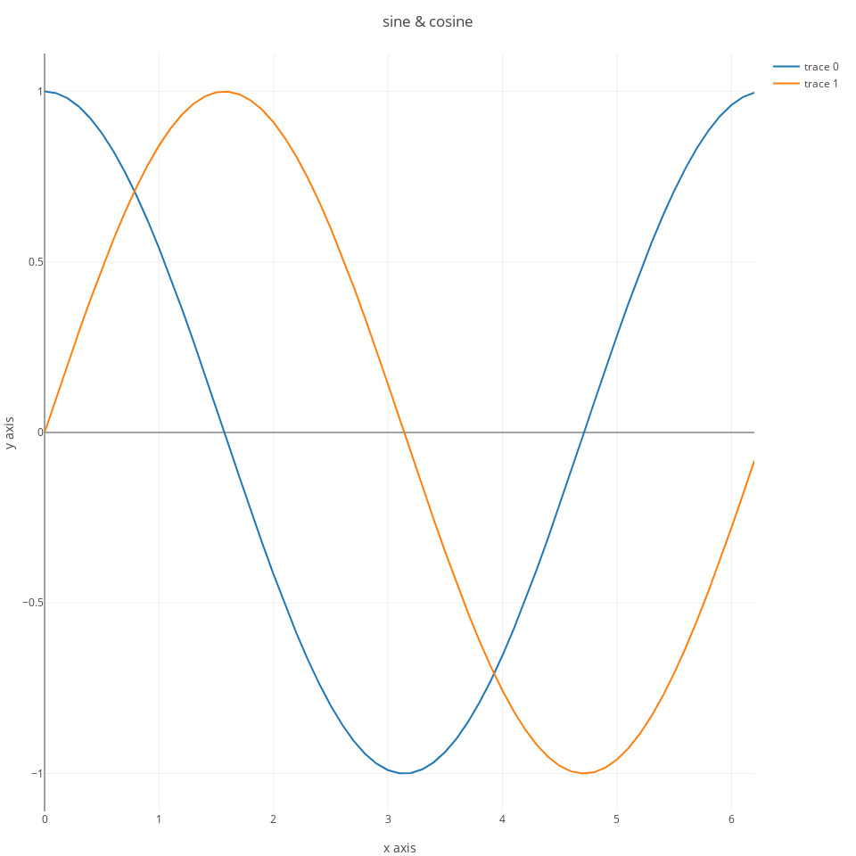
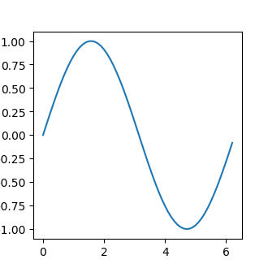

Julia Notes
31/01/2020
Samuele Carcagno: sam.carcagno@gmail.com
This work is licensed under the Creative Commons Attribution 4.0 International License. To view a copy of this license, visit http://creativecommons.org/licenses/by/4.0/.
This document contains some notes on the Julia programming language (Bezanson et al. 2017). The notes are sketchy and are written mainly for myself, but they may be useful to someone learning the language.
1 A simple introduction to Julia
It is customary to start a tutorial on a programming language by printing the phrase “Hello world!”. We can do that from a julia terminal (also known as REPL, which stands for read–eval–print loop) using the println function:
## Hello world!but tipically we want to save our programs in a script for later execution. So suppose we have saved our println("Hello world!") command in a file called test_julia.jl. How do we execute the program? We can use the include function for this purpose:
If you’re new to programming, it may be helpful to think of julia as a fancy calculator initially, and using it as such to familiarize yourself with it. For example you can perform simple arithmetic operations from the REPL:
## 12you can also assign the results of operations to variables, for example:
## 12and use these variables for further operations, such as:
## 4.0Of course julia is much more than just a fancy calculator, and hopefully this tutorial (which is very much of a work in progress, and therefore very patchy) will give and idea of what you can do with julia and how.
If you’re new to julia you should be aware that the basic installation only provides a limited set of core functions. Additional functionality is provided by addon packages which need to be installed and initialized in order to be used. More detailed info on installing and managing packages is available in Section 4. For a quickstart, suppose that you want to compute the mean of a set of numbers. To do this you need to install the StatsBase package first, which provides statistical functions. You can do this with the following command:
to use the functions in the package you need to load it into your workspace with the using command:
now you can use the mean function, for example:
## 2.0Julia has taken a very modular approach splitting the core language functions from domain specific functions which are provided by add on packages. For example a base installation of julia does not have built in plotting functionality. For this you need to install one of the plotting packages. An overview of some of these packages is provided in other sections of this document: Gadfly, PyPlot, VegaLite. You can also call R from julia, and so you can indirectly use ggoplot2 from julia. This is illustrated in the ggplot2 section.
1.1 Getting help
To get help on a function you can type the question mark (?) at the REPL, followed by the name of the function for which you seek help, for example to get help on the println function you can type:
2 Data Types
2.1 A quick overview of the most common data types
Julia has a sophisticated type system, and a variety of built-in data types and structures. If you’re totally new to programming you may want to learn the basics of how numbers are represented in computers (e.g. learn the difference between integers and floating point numbers) because a basic knowledge of these topics will be very useful, if not essential, when working with Julia.
You can check the type of an object with the typeof function. For example:
## Int64## Float64You can convert easily between the two:
## 3## 3.0## 3.0## 3Now that we’ve seen some numbers let’s move on to strings:
## "Hello"## "3"we can convert z above to an integer or a floating point number with the parse function:
## 3## 3.0One of the most useful data structures are arrays. Arrays are containers that can contain objects of different types. We can initialize arrays of numbers with the zeros function:
## 5-element Array{Float64,1}:
## 0.0
## 0.0
## 0.0
## 0.0
## 0.0by default this initializes an array of 64-bit floating point numbers, but we can specify a different type if we want to:
## 5-element Array{Int64,1}:
## 0
## 0
## 0
## 0
## 0## 5-element Array{Float32,1}:
## 0.0
## 0.0
## 0.0
## 0.0
## 0.0we can also intialize arrays with more than one dimension:
## 3×3 Array{Float64,2}:
## 0.0 0.0 0.0
## 0.0 0.0 0.0
## 0.0 0.0 0.0## 3×3×3 Array{Float64,3}:
## [:, :, 1] =
## 0.0 0.0 0.0
## 0.0 0.0 0.0
## 0.0 0.0 0.0
##
## [:, :, 2] =
## 0.0 0.0 0.0
## 0.0 0.0 0.0
## 0.0 0.0 0.0
##
## [:, :, 3] =
## 0.0 0.0 0.0
## 0.0 0.0 0.0
## 0.0 0.0 0.0Arrays can also contain strings:
## 3-element Array{String,1}:
## "a"
## "b"
## "c"or be miscellaneous collections of objects of Any type (similar to Python lists):
## 3-element Array{Any,1}:
## 1
## "a"
## 3.0including other arrays:
## 4-element Array{Any,1}:
## 1
## "a"
## 3.0
## [1, 2, 3]Dictionaries, consisting of key-value pairs, constitute anothe very useful object. The key and the values can be of different types. For example:
will initialize a dictionary with a string key, and a value that can be of any type:
2.1.1 Arrays
Initializing vectors of a given type:
## 0-element Array{Int64,1}## 0-element Array{Real,1}## 0-element Array{String,1}you can then push! elements inside the vectors
## 1-element Array{Int64,1}:
## 3## 1-element Array{Real,1}:
## 3.2## 1-element Array{String,1}:
## "abc"2.1.2 Dictionaries
Nested dictionaries:
## Dict{String,Any} with 0 entries## Dict{String,Any} with 0 entries## 3-element Array{Int64,1}:
## 1
## 2
## 33 Mutable and immutable objects
Objects in Julia can either be mutable or immutable, you can check whether
an object is immutable with the isimmutable function, for example, integers and
floating point numbers are immutable:
## true## truewhile arrays and dictionaries are mutable:
## false## falseImmutable objects cannot be changed, while mutable objects can. Why is this important? Because they behave very differently. For example, suppose that you bind variable a to an immutable object:
## 1then you bind another variable, b, to a:
## 1you can check that a and b are bound to the same object:
## 11967854120867199718## 11967854120867199718## truenow if you change the value of a, you’re binding it to a new object, while b is still bound to the previous one:
## 2## 5352850025288631388## 1## 11967854120867199718so, a and b now have different values. So far so good, but what happens with variables bound to mutable objects? Let’s try to bind x to an array, which is mutable, and then bind y to x:
## 3-element Array{Int64,1}:
## 1
## 2
## 3## 3-element Array{Int64,1}:
## 1
## 2
## 3## 15596065500155535289## 15596065500155535289now we change the value of the first element of x:
## 999## [999, 2, 3]## 15596065500155535289## 15596065500155535289we can see that the first element of y has changed as well, and x and y are still bound to the same object. When we modify the value of the first element of x we’re not binding x to a new object, we’re modifying the old one, so x and y are still bound to the same object, and changing the value of the first element of x also changes the value of the first element of y. But watch out! If you do:
## 3-element Array{Int64,1}:
## 1
## 2
## 3## 3-element Array{Int64,1}:
## 1
## 2
## 3## 7365922990070846502## 7365922990070846502## 3-element Array{Int64,1}:
## 999
## 2
## 3## [1, 2, 3]## 12877331896388202487## 7365922990070846502you’re not modifying the mutable object to which x was bound, you’re binding x to a totally new object! So x and y will be bound to different objects.
When you change an item in the container the binding of a variable to the container doesn’t change, but if you change the container… the binding will change. Here’s anothe example in which we change the container:
## 3-element Array{Int64,1}:
## 1
## 2
## 3## 3-element Array{Int64,1}:
## 1
## 2
## 3## 3-element Array{Int64,1}:
## 1
## 2
## 3## falsedespite the fact that they have the same value:
## trueAll this may seem abstract and, and may seem to be touching edge cases, but it has important consequences. One of these is that if you pass a mutable object to a function as an argument, and you modify that object inside the function, the object will be modified even though you may not explicitly return it. For example, suppose that we write a function to sum two arrays, and in case the first array is longer than the second one we remove elements from it until their length matches:
note that the function does not explicitly return x, but will nontheless modify it. Now let’s call the function with the following arguments:
## 2-element Array{Int64,1}:
## 3
## 3we get the value of z which we explicitly returned, but if we check what value now x has:
## 2-element Array{Int64,1}:
## 1
## 1we can see that it has been modified as well. This doesn’t happen with immutable objects. Let’s check it with another very contrived example:
## 6the function returns the expected value, and if we check what’s the value of x:
## 8we can see that it has not changed. That’s because x is bound to an immutable object in this case, and the variable x inside the function is in a different scope from the variable x outside the function.
Another important side effect of the difference between mutable and immutable objects involves the local scope introduced by certain code blocks, such as for loops. Variables from the global scope are available for reading in the local scope, but not for writing. So for example the x in the for loop below will be bound to a new object in the local scope of the loop:
## 1
## 2
## 3we can check that the x in the global scope has not been modified:
## 0But if x is a mutable object, and we modify one of its elements inside the loop:
## [0, 1, 0]
## [0, 2, 0]
## [0, 3, 0]this will be reflected in the global scope:
## 3-element Array{Int64,1}:
## 0
## 3
## 04 Installing and managing packages
There are two ways of installing and managing packages in Julia. One is through functions at the Julia REPL, the other is through the package manager REPL. For example, to install the Gadfly package from the Julia REPL you can use the Pkg.add function:
to do the same from the package manager REPL you need to first access the package manager REPL by typing ] in the Julia REPL. Once you’ve entered the package manager REPL, which should show pkg> in the prompt, you can install a package using the add command:
Passing the name of the package to install, as shown in the examples above works for packages registered in the Julia package database. If you want to install unregistered packages that are available on GitHub or other git repositories you need to pass the git URL of the package that you want to install. For example, you can install the SndLib.jl package from the Julia REPL as follows:
To update your packages to their latest version you can use the Pkg.update() command from the julia REPL, or the up command from the package manager REPL.
To remove a package you can use the Pkg.rm("packageName") command from the Julia REPL, or the rm packageName command from the package manager REPL.
5 DataFrames
In Julia dataframes are handled by an addon package. It can be installed with:
it’s very likely that you will want to read and write dataframes as CSV files at some stage. This functionality is provided by the CSV.jl package, so you should install it as well:
to use the DataFrames and CSV packages you need to load them:
For the examples we’ll use the iris dataset from the RDatasets package, so
we’ll need to install it first if it’s not already installed:
we can now load it and load the iris dataset:
## 150×5 DataFrame
## │ Row │ SepalLength │ SepalWidth │ PetalLength │ PetalWidth │ Species │
## │ │ Float64 │ Float64 │ Float64 │ Float64 │ Categorical… │
## ├─────┼─────────────┼────────────┼─────────────┼────────────┼──────────────┤
## │ 1 │ 5.1 │ 3.5 │ 1.4 │ 0.2 │ setosa │
## │ 2 │ 4.9 │ 3.0 │ 1.4 │ 0.2 │ setosa │
## │ 3 │ 4.7 │ 3.2 │ 1.3 │ 0.2 │ setosa │
## │ 4 │ 4.6 │ 3.1 │ 1.5 │ 0.2 │ setosa │
## │ 5 │ 5.0 │ 3.6 │ 1.4 │ 0.2 │ setosa │
## │ 6 │ 5.4 │ 3.9 │ 1.7 │ 0.4 │ setosa │
## │ 7 │ 4.6 │ 3.4 │ 1.4 │ 0.3 │ setosa │
## ⋮
## │ 143 │ 5.8 │ 2.7 │ 5.1 │ 1.9 │ virginica │
## │ 144 │ 6.8 │ 3.2 │ 5.9 │ 2.3 │ virginica │
## │ 145 │ 6.7 │ 3.3 │ 5.7 │ 2.5 │ virginica │
## │ 146 │ 6.7 │ 3.0 │ 5.2 │ 2.3 │ virginica │
## │ 147 │ 6.3 │ 2.5 │ 5.0 │ 1.9 │ virginica │
## │ 148 │ 6.5 │ 3.0 │ 5.2 │ 2.0 │ virginica │
## │ 149 │ 6.2 │ 3.4 │ 5.4 │ 2.3 │ virginica │
## │ 150 │ 5.9 │ 3.0 │ 5.1 │ 1.8 │ virginica │let’s create a numeric vector and a string vector of the same length, and then put them in a dataframe:
## 10-element Array{Float64,1}:
## 0.35980655374348225
## 0.30914613783299005
## 0.7305710415910236
## 0.28772472645844993
## 0.7304237025238804
## 0.8263018940027678
## 0.3042506763452575
## 0.7658358345495233
## 0.4057944014256023
## 0.8265083273898153## 10-element Array{String,1}:
## "a"
## "a"
## "a"
## "a"
## "a"
## "b"
## "b"
## "b"
## "b"
## "b"## 10×2 DataFrame
## │ Row │ y │ cnd │
## │ │ Float64 │ String │
## ├─────┼──────────┼────────┤
## │ 1 │ 0.359807 │ a │
## │ 2 │ 0.309146 │ a │
## │ 3 │ 0.730571 │ a │
## │ 4 │ 0.287725 │ a │
## │ 5 │ 0.730424 │ a │
## │ 6 │ 0.826302 │ b │
## │ 7 │ 0.304251 │ b │
## │ 8 │ 0.765836 │ b │
## │ 9 │ 0.405794 │ b │
## │ 10 │ 0.826508 │ b │to access the columns of a dataframe use the following syntax:
note that :y or :cnd are Symbols:
## Symbolsometimes it is necessary to access the column of a dataframe using a string. You can do so by converting a string to a symbol:
you can also retrieve a column by its column number
to write a dataframe to a text of CSV file, use:
it is also possible to specify a separator, note that the separator character must be enclosed by
single ticks '':
To read a dataframe from a text file, use:
5.0.1 Displaying data on screen
To show the first few rows of a dataframe on screen you can use the first
function, which takes as arguments the name of the dataframe and the number of
rows that you want to show:
## 4×5 DataFrame
## │ Row │ SepalLength │ SepalWidth │ PetalLength │ PetalWidth │ Species │
## │ │ Float64 │ Float64 │ Float64 │ Float64 │ Categorical… │
## ├─────┼─────────────┼────────────┼─────────────┼────────────┼──────────────┤
## │ 1 │ 5.1 │ 3.5 │ 1.4 │ 0.2 │ setosa │
## │ 2 │ 4.9 │ 3.0 │ 1.4 │ 0.2 │ setosa │
## │ 3 │ 4.7 │ 3.2 │ 1.3 │ 0.2 │ setosa │
## │ 4 │ 4.6 │ 3.1 │ 1.5 │ 0.2 │ setosa │similarly to show the last few columns you can use the last command:
## 4×5 DataFrame
## │ Row │ SepalLength │ SepalWidth │ PetalLength │ PetalWidth │ Species │
## │ │ Float64 │ Float64 │ Float64 │ Float64 │ Categorical… │
## ├─────┼─────────────┼────────────┼─────────────┼────────────┼──────────────┤
## │ 1 │ 6.3 │ 2.5 │ 5.0 │ 1.9 │ virginica │
## │ 2 │ 6.5 │ 3.0 │ 5.2 │ 2.0 │ virginica │
## │ 3 │ 6.2 │ 3.4 │ 5.4 │ 2.3 │ virginica │
## │ 4 │ 5.9 │ 3.0 │ 5.1 │ 1.8 │ virginica │If you have a dataframe with too many columns to fit the screen some will be truncated. To get around this you can use:
5.1 Selecting rows
We’ve already seen how we can select a given column of a dataframe. Selecting
rows of a dataframe on the basis of one or more conditions is another fundamental
operation. The following command returns a boolean vector indicating whether
each element in the Species column of the iris datasets is “setosa” or not:
## 150-element BitArray{1}:
## 1
## 1
## 1
## 1
## 1
## 1
## 1
## 1
## 1
## 1
## ⋮
## 0
## 0
## 0
## 0
## 0
## 0
## 0
## 0
## 0we can use this vector to select the corresponding rows of the dataframe:
or more succintly we could achieve the same result with a single command:
we can also setect rows on the basis of multiple conditions, for example only the ones for the setosa specimens with a petal length greater than 1.5:
## 13×5 DataFrame
## │ Row │ SepalLength │ SepalWidth │ PetalLength │ PetalWidth │ Species │
## │ │ Float64 │ Float64 │ Float64 │ Float64 │ Categorical… │
## ├─────┼─────────────┼────────────┼─────────────┼────────────┼──────────────┤
## │ 1 │ 5.4 │ 3.9 │ 1.7 │ 0.4 │ setosa │
## │ 2 │ 4.8 │ 3.4 │ 1.6 │ 0.2 │ setosa │
## │ 3 │ 5.7 │ 3.8 │ 1.7 │ 0.3 │ setosa │
## │ 4 │ 5.4 │ 3.4 │ 1.7 │ 0.2 │ setosa │
## │ 5 │ 5.1 │ 3.3 │ 1.7 │ 0.5 │ setosa │
## │ 6 │ 4.8 │ 3.4 │ 1.9 │ 0.2 │ setosa │
## │ 7 │ 5.0 │ 3.0 │ 1.6 │ 0.2 │ setosa │
## │ 8 │ 5.0 │ 3.4 │ 1.6 │ 0.4 │ setosa │
## │ 9 │ 4.7 │ 3.2 │ 1.6 │ 0.2 │ setosa │
## │ 10 │ 4.8 │ 3.1 │ 1.6 │ 0.2 │ setosa │
## │ 11 │ 5.0 │ 3.5 │ 1.6 │ 0.6 │ setosa │
## │ 12 │ 5.1 │ 3.8 │ 1.9 │ 0.4 │ setosa │
## │ 13 │ 5.1 │ 3.8 │ 1.6 │ 0.2 │ setosa │The DataFramesMeta package also provides convenient functions for selecting rows
of a dataframes on the basis of one or more conditions.
## 50×5 DataFrame
## │ Row │ SepalLength │ SepalWidth │ PetalLength │ PetalWidth │ Species │
## │ │ Float64 │ Float64 │ Float64 │ Float64 │ Categorical… │
## ├─────┼─────────────┼────────────┼─────────────┼────────────┼──────────────┤
## │ 1 │ 5.1 │ 3.5 │ 1.4 │ 0.2 │ setosa │
## │ 2 │ 4.9 │ 3.0 │ 1.4 │ 0.2 │ setosa │
## │ 3 │ 4.7 │ 3.2 │ 1.3 │ 0.2 │ setosa │
## │ 4 │ 4.6 │ 3.1 │ 1.5 │ 0.2 │ setosa │
## │ 5 │ 5.0 │ 3.6 │ 1.4 │ 0.2 │ setosa │
## │ 6 │ 5.4 │ 3.9 │ 1.7 │ 0.4 │ setosa │
## │ 7 │ 4.6 │ 3.4 │ 1.4 │ 0.3 │ setosa │
## ⋮
## │ 43 │ 4.4 │ 3.2 │ 1.3 │ 0.2 │ setosa │
## │ 44 │ 5.0 │ 3.5 │ 1.6 │ 0.6 │ setosa │
## │ 45 │ 5.1 │ 3.8 │ 1.9 │ 0.4 │ setosa │
## │ 46 │ 4.8 │ 3.0 │ 1.4 │ 0.3 │ setosa │
## │ 47 │ 5.1 │ 3.8 │ 1.6 │ 0.2 │ setosa │
## │ 48 │ 4.6 │ 3.2 │ 1.4 │ 0.2 │ setosa │
## │ 49 │ 5.3 │ 3.7 │ 1.5 │ 0.2 │ setosa │
## │ 50 │ 5.0 │ 3.3 │ 1.4 │ 0.2 │ setosa │## 13×5 DataFrame
## │ Row │ SepalLength │ SepalWidth │ PetalLength │ PetalWidth │ Species │
## │ │ Float64 │ Float64 │ Float64 │ Float64 │ Categorical… │
## ├─────┼─────────────┼────────────┼─────────────┼────────────┼──────────────┤
## │ 1 │ 5.4 │ 3.9 │ 1.7 │ 0.4 │ setosa │
## │ 2 │ 4.8 │ 3.4 │ 1.6 │ 0.2 │ setosa │
## │ 3 │ 5.7 │ 3.8 │ 1.7 │ 0.3 │ setosa │
## │ 4 │ 5.4 │ 3.4 │ 1.7 │ 0.2 │ setosa │
## │ 5 │ 5.1 │ 3.3 │ 1.7 │ 0.5 │ setosa │
## │ 6 │ 4.8 │ 3.4 │ 1.9 │ 0.2 │ setosa │
## │ 7 │ 5.0 │ 3.0 │ 1.6 │ 0.2 │ setosa │
## │ 8 │ 5.0 │ 3.4 │ 1.6 │ 0.4 │ setosa │
## │ 9 │ 4.7 │ 3.2 │ 1.6 │ 0.2 │ setosa │
## │ 10 │ 4.8 │ 3.1 │ 1.6 │ 0.2 │ setosa │
## │ 11 │ 5.0 │ 3.5 │ 1.6 │ 0.6 │ setosa │
## │ 12 │ 5.1 │ 3.8 │ 1.9 │ 0.4 │ setosa │
## │ 13 │ 5.1 │ 3.8 │ 1.6 │ 0.2 │ setosa │5.1.1 Summarizing data
Summarizing data with the functions providing in the DataFrames package is
somwhat verbose:
using Statistics
summIris = by(iris, [:Species], df -> DataFrame(meanPetalWidth=mean(df[!,:PetalWidth])))## 3×2 DataFrame
## │ Row │ Species │ meanPetalWidth │
## │ │ Categorical… │ Float64 │
## ├─────┼──────────────┼────────────────┤
## │ 1 │ setosa │ 0.246 │
## │ 2 │ versicolor │ 1.326 │
## │ 3 │ virginica │ 2.026 │using the macros in DataFramesMeta is much better
## 3×2 DataFrame
## │ Row │ Species │ x │
## │ │ Categorical… │ Float64 │
## ├─────┼──────────────┼─────────┤
## │ 1 │ setosa │ 0.246 │
## │ 2 │ versicolor │ 1.326 │
## │ 3 │ virginica │ 2.026 │there are slightly different ways of achieving the same result:
## 3×2 DataFrame
## │ Row │ Species │ x │
## │ │ Categorical… │ Float64 │
## ├─────┼──────────────┼─────────┤
## │ 1 │ setosa │ 3.428 │
## │ 2 │ versicolor │ 2.77 │
## │ 3 │ virginica │ 2.974 │or:
## 3×2 DataFrame
## │ Row │ Species │ x │
## │ │ Categorical… │ Float64 │
## ├─────┼──────────────┼─────────┤
## │ 1 │ setosa │ 0.246 │
## │ 2 │ versicolor │ 1.326 │
## │ 3 │ virginica │ 2.026 │6 Random Numbers and Sampling
One of the fundamental functions to generate random number and random sampling in Julia is rand. This function picks random elements from a collection of items. If the function is called without arguments it will generate a random 64-bit floating point number between 0 and 1 because that is the default collection:
## 0.4023878488048531to generate a random integer between say 1 and 100 we need to pass that collection as an argument:
## 85the collection to sample from could be something different than numbers. For example we can generate a sequence of letters and sample from it:
## "a"to generate more than one element we need to specify the dimensions of the vector or matrix of elements that we want to generate:
## 10-element Array{Int64,1}:
## 84
## 58
## 89
## 82
## 32
## 14
## 85
## 26
## 72
## 61## 2×5 Array{Int64,2}:
## 95 13 6 83 57
## 93 79 80 76 81note that sampling is done with replacement:
## 4-element Array{String,1}:
## "d"
## "b"
## "c"
## "b"## 10-element Array{String,1}:
## "a"
## "d"
## "b"
## "a"
## "c"
## "b"
## "c"
## "d"
## "c"
## "d"the StatsBase.jl package provides convenient functions to sample with or without replacement. For example, to sample without replacement:
## 4-element Array{String,1}:
## "b"
## "d"
## "c"
## "a"6.1 Setting the random seed
It is sometimes desirable that a call to a random number generator actually generates the same “random” sequence each time it is called at a specific point in a script (e.g. to make an example reproducible). To achieve this it is necessary to explicitly initialize the random number generator with a “seed”. In julia this can be done with the Random.seed! function in the standard library package Random:
6.2 Working with distributions
The Distributions.jl package provides functions to sample from various distributions. For example, to sample from a normal distribution with mean=10, and sd=2, we first instantiate it:
## Normal{Float64}(μ=10.0, σ=2.0)then we sample from it with rand:
## 10-element Array{Float64,1}:
## 13.097676249974274
## 11.757335823480798
## 12.237501126505748
## 13.168175635876224
## 11.14411361628477
## 10.67240877975671
## 10.150159377468727
## 5.931032863139524
## 11.139710601976821
## 11.021572604999648we would do the same more succintly with:
To sample from a uniform distribution:
## 5-element Array{Float64,1}:
## 24.767443081616506
## 26.203224039053918
## 23.73620344244641
## 29.20225681258401
## 21.6799247127171677 Workflow
7.1 Environment customization
You can customize your Julia environment by inserting code in the startup.jl file located in ~.julia/config/ (create both the directory tree and the file if they don’t yet exist in your system), which is run each time Julia starts up. You could use this to load packages that you use frequently, define functions or set variables that you use often in your interactive sessions. Below is an example of a startup.jl file:
the first line appends the directory path to local modules to the LOAD_PATH environment variable, so that they can be loaded if needed. The second line loads the Pkg module, something that may be useful if you frequently install/update packages on your system and find it annoying to load the module manually each time.
8 PlotlyJS
PlotlyJS.jl is a Julia package generate interactive html figures. The figures can be saved to disk either as html pages, or in a variety of formats (pdf, png, etc…) through the ORCA.jl package.
PlotlyJS can display plots in a window either through ElectronDisplay.jl, or through Blink.jl. In sum, for a full setup you may want to install the following three packages:
and then load them with:
there are some convenience methods that allow you to quickly plot a line plot or a scatter plot. For example:

for a scatterplot:
x = rand(10); y=rand(10);
p = plot(x, y, mode="markers", marker_color="black"); #line plot from two arrays
however, generally you will have to use a slightly more verbose syntax to fully leverage the features of plotlyJS. In particular, you need to pass two arguments to the plot command. The first consists of one or more traces, and the second one of a layout specification. With this syntax you can generate a line plot as follows:
x = collect(0:0.1:2*pi);
s1 = scatter(;x=x, y=cos.(x));
ly = Layout(;title="cosine", xaxis_title="x axis", yaxis_title="y axis");
p = plot([s1], ly);
you can add more than one trace to a plot:
s2 = scatter(;x=x, y=sin.(x));
ly = Layout(;title="sine & cosine", xaxis_title="x axis", yaxis_title="y axis");
p = plot([s1,s2], ly);
you can tweak several aspects of the plots. We’ll start with changing some of the default options that I don’t really like. For example, the default option when hovering with the mouse on the plot is set to compare, which may be useful to compare two traces, but I find generally less useful than the other option, which is to show the values of the closest data point. You can change this by passing an option in the layout:
ly = Layout(;title="sine & cosine", xaxis_title="x axis",
yaxis_title="y axis",
hovermode="closest");another default that I tipically change is removing the line intercepting the y axis at zero, again you can do that from the call to Layout:
ly = Layout(;title="sine & cosine", xaxis_title="x axis",
yaxis_title="y axis",
hovermode="closest",
yaxis_zeroline=false);I also find it useful to have a line at the edge of both the x, and y axes, you can set this with xaxis_showline and yaxis_showline:
9 Gadfly
using Gadfly
x = collect(0:0.1:2*pi)
plot(x=x, y=sin.(x), Geom.line,
Guide.xlabel("Angle (radians)"), Guide.ylabel("Amplitude"));using RDatasets
iris = dataset("datasets", "iris")
plot(iris, x="SepalLength", y="SepalWidth", color="Species", Geom.point);Facets:
oats = dataset("MASS", "oats")
oats[:Nitro] = [parse(Float64, split(oats[:N][i], "c")[1]) for i=1:length(oats[:N])]
set_default_plot_size(16cm, 16cm)
plot(oats, xgroup="V", ygroup="B", x="Nitro", y="Y", Geom.subplot_grid(Geom.point, Geom.line), Guide.xlabel("Nitro by Variety"), Guide.ylabel("Yeld By Block"));10 ggplot2 via RCall
It’s possible to use ggplot2 via the functionality provided by the RCall package in Julia:
using RCall
using RDatasets
oats = dataset("MASS", "oats")
oats[:Nitro] = [parse(Float64, split(oats[:N][i], "c")[1]) for i=1:length(oats[:N])]
R"""library(ggplot2)"""
R"""p=ggplot($oats, aes(Nitro, Y))+facet_grid(B~V)+geom_point()"""
R"""ggsave("../Figures/ggplot_oats.png", p)"""
11 Vegalite
VegaLite.jl is a plotting package for Julia based on Vega-Lite. Its two most notable features are that 1) it is based on a grammar of graphics, like the ggplot2 R package; 2) it produces interactive html graphics (but they can also be saved on disk in other static formats such as pdf or png).
Using Vegalite.jl feels a lot like using ggplot2, so users of ggplot2 in R will feel right at home.
using VegaLite
using RDatasets
iris = dataset("datasets", "iris")
p = iris |> @vlplot(:point,
x=:SepalLength,
y=:SepalWidth,
color=:Species,
width=250,
height=250
)Note that you may need to either call p or p |> display to show the plot. Depending on whether you’re using the terminal or a IDE the plot may open up in a browser window. The ElectronDisplay.jl package provides a convenient plotting window that can show VegaLite plots.

Now that we have this first plot, let’s make a few tweaks it to improve its appearance. Currently by the default when you hover with the mouse on the points nothing happens, but you can enable tooltips as follows:
p = iris |> @vlplot(:point,
x=:SepalLength,
y=:SepalWidth,
color=:Species,
width=400,
height=400,
tooltip=[{field="SepalLength"}, {field="SepalWidth"}]
)By default, the axes start from zero. If you do not want the axes to start from zero you need to specify this as follows:
p = iris |> @vlplot(:point,
x={:SepalLength, scale={zero=false}},
y={:SepalWidth, scale={zero=false}},
color=:Species,
width=400,
height=400,
tooltip=[{field="SepalLength"}, {field="SepalWidth"}]
)We can add prettier labels to the x and y axis as follows:
p = iris |> @vlplot(:point,
x={:SepalLength,
scale={zero=false},
axis={title="Sepal Length (cm)"}},
y={:SepalWidth,
scale={zero=false},
axis={title="Sepal Width (cm)"}},
color=:Species,
width=400,
height=400,
tooltip=[{field="SepalLength"}, {field="SepalWidth"}]
)We can remove the grid as well:
12 PyPlot (matplotlib)

12.0.1 Saving multiple plots in one pdf with PyPlot
13 Parallel Processing
The BLAS library automatically makes use of multiple cores in your machine. You can tell it how many threads to use with the BLAS.set_num_threads function in LinearAlgebra:
14 Generating packages
To generate an empty package skeleton use:
or generate packageName from the package manager shell.
15 Working with sound
Julia has fairly good support for working with sound. The WAV.jl package can be used to read and write WAV files. The DSP.jl package provides functions for digital signal processing. My SndLib.jl package provides functions to synthesize and process various sounds commonly used in psychoacoustic experiments.
References
Bezanson, J., A. Edelman, S. Karpinski, and V. Shah. 2017. “Julia: A Fresh Approach to Numerical Computing.” SIAM Review 59 (1): 65–98. https://doi.org/10.1137/141000671.